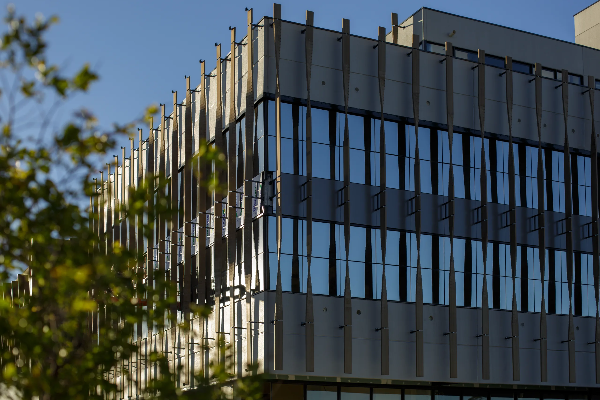
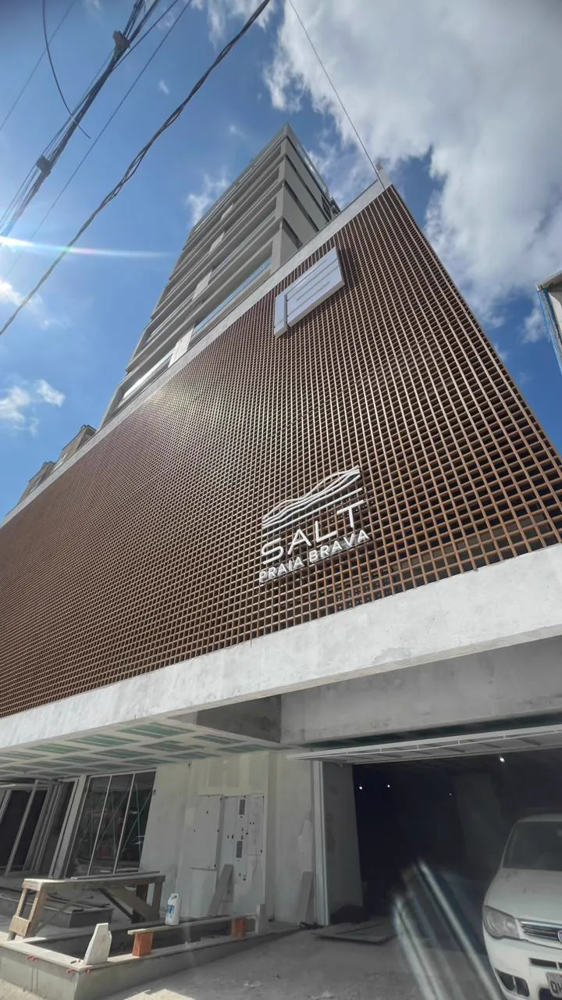
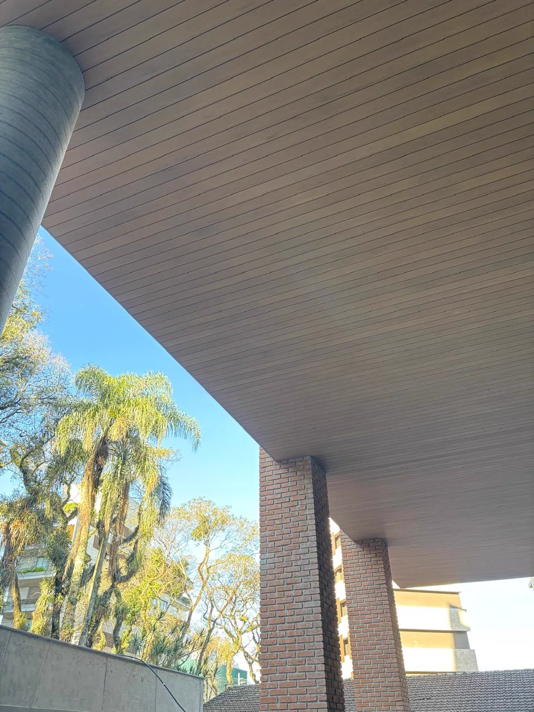
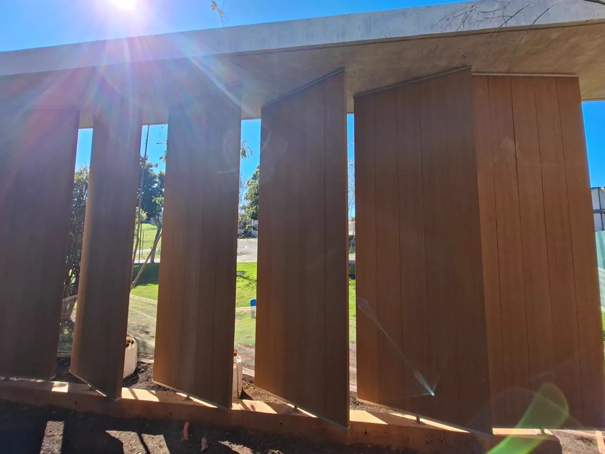

Quadro 1 · capa

Live técnica · Lesco
Quadro 2 · a virada
Espera chumbada no concreto. Parafuso certo. Espaçamento que não perdoa. Travamento que ninguém vê depois de pronto.
Nada disso está desenhado na prancha.
Quadro 3 · cinco sistemas

Na live
Brise, pivotante, muxarabi, deck e painel. Cada um pede uma subestrutura diferente — e erra de um jeito diferente.
Quadro 4 · trabalho em altura

Na live
Fachada inteira feita de balancim, sem andaime na frente toda. A logística é parte do prazo.
Quadro 5 · a peça que se move

Na live
Alma de aço por dentro do perfil, eixo, folga e o teste de giro. O que muda quando a peça não é fixa.
Quadro 6 · para quem é
Para quem é
Ao vivo, com a equipe que montou cada uma dessas obras. Pergunta aberta o tempo todo — inclusive as que ninguém faz na frente do cliente.
Quadro 7 · chamada
Ao vivo
dia e horário
Aqui no Instagram. Ative o lembrete — não vai ter regravação.
@perfil